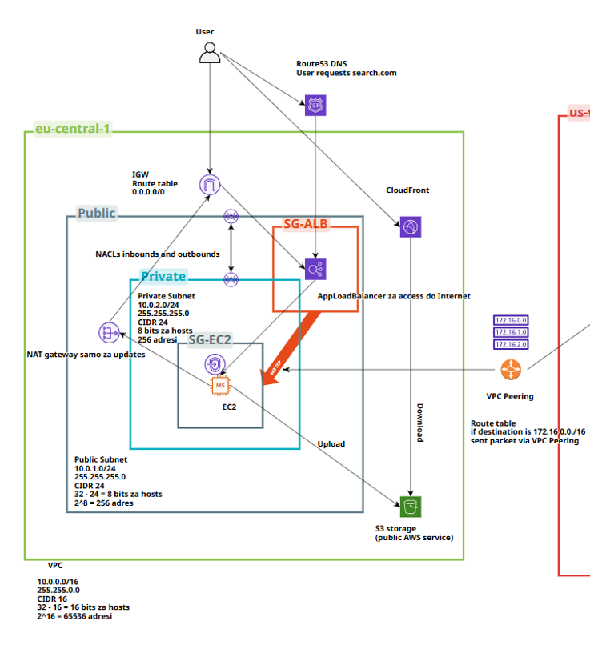

Networking · OSPF · Cloud · Cisco
ISP Architecture — OSPF, Security & Cloud
A comprehensive ISP network architecture project implementing OSPF dynamic routing. Includes DNS, DHCP, HTTPS configurations, firewall rules, and AWS Cloud for comparison with traditional networking approaches.